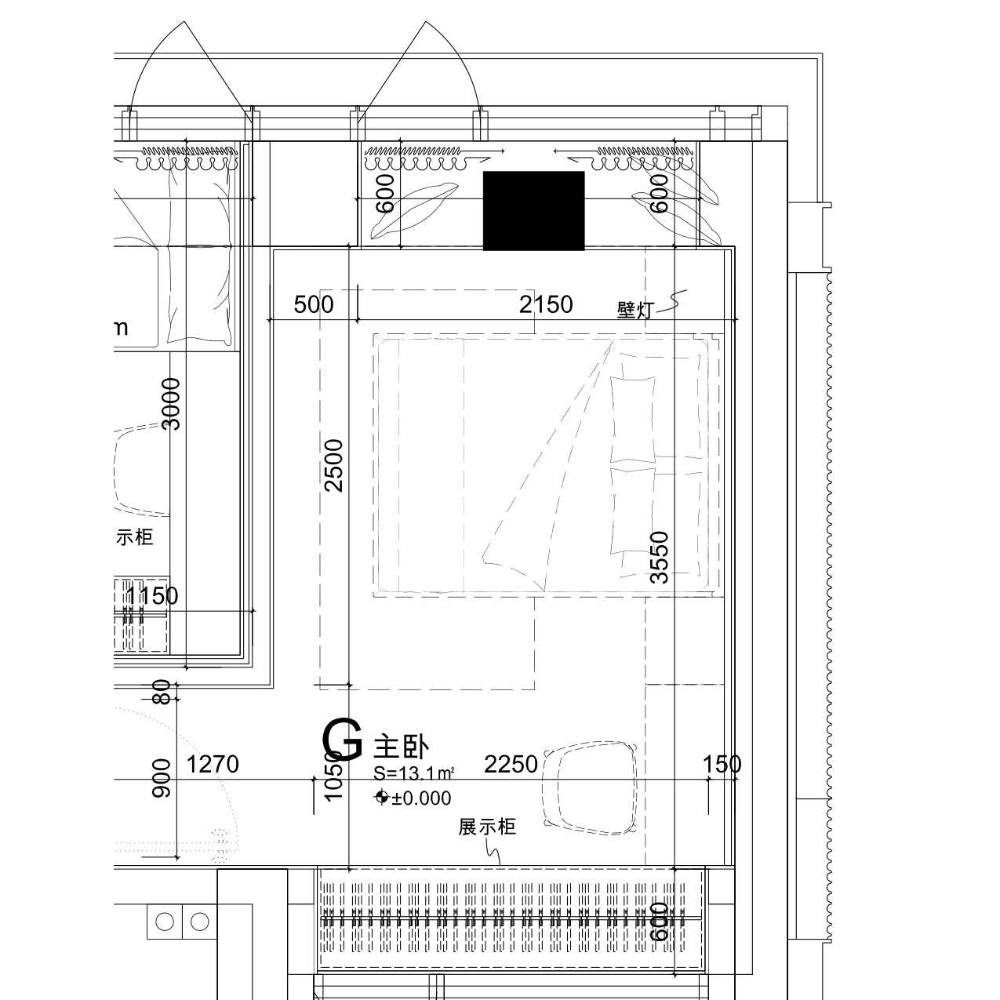

来源：开发商交付DWG转换DXF，核对原墙、结构柱及完成面线。下图是原图局部，不是模型渲染。
| 位置 | 本次核对与修改 |
|---|---|
| 入口L形角 | DWG确有L形入口，但墙角没有模型中的细小台阶。将相交墙延伸到墙面边界，消除中心线截断造成的缺口。 |
| 北飘窗两端 | 保留真实实体墙垛，将短墙、侧墙端点接齐；不把整面墙改成玻璃。 |
| 南飘窗两端及外侧 | 保留窗侧实体墙，将独立短墙与侧墙的拼接端点统一。外立面构造细节未完整复建。 |
核对范围：本次修正墙段连接关系，并非全屋尺寸已经校准。原图墙体定位线、装修完成面线和现场窗净宽口径不同，不应混用。主卧床柜按当前空间适配的尺寸仍需复尺。

此前全屋结构差异记录 · 层高及风口冲突记录 · 回到模型